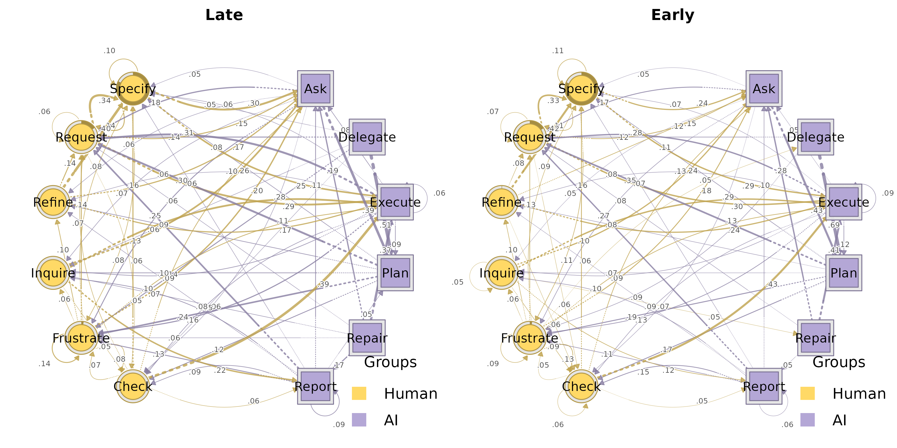
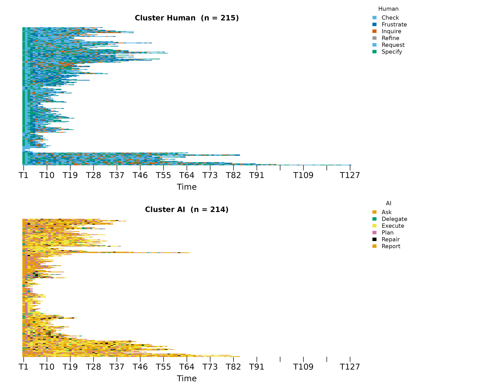
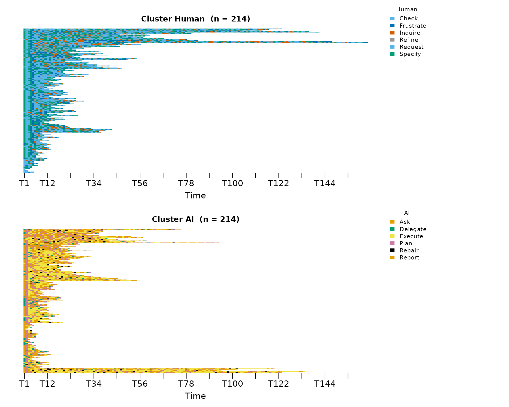
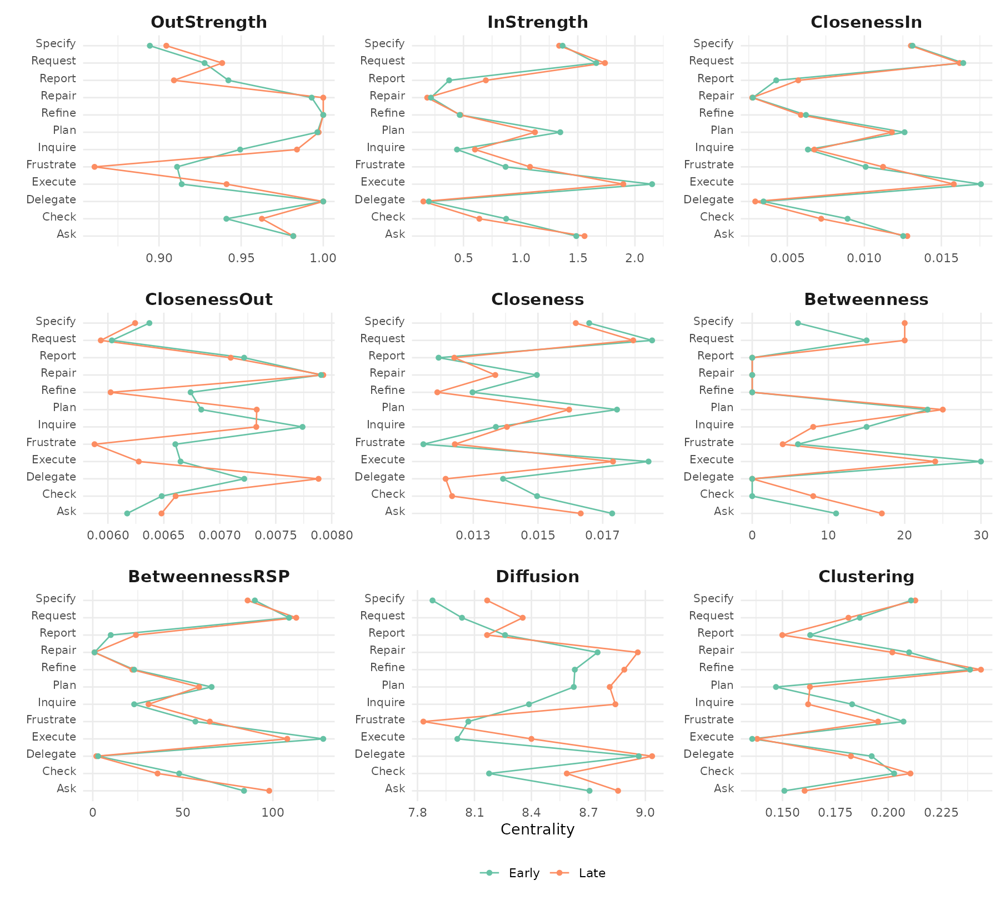
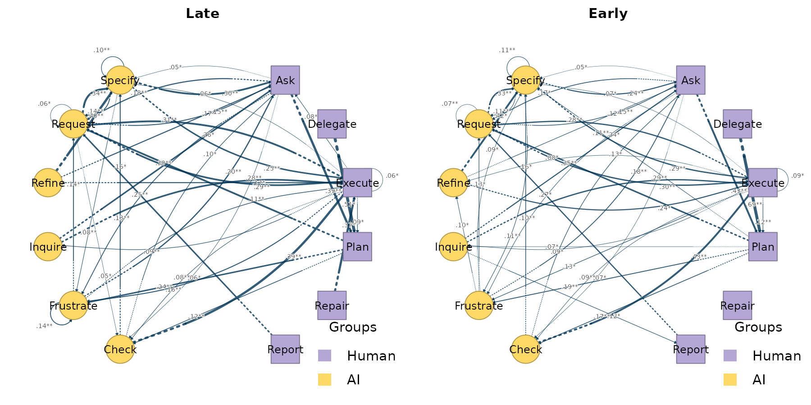
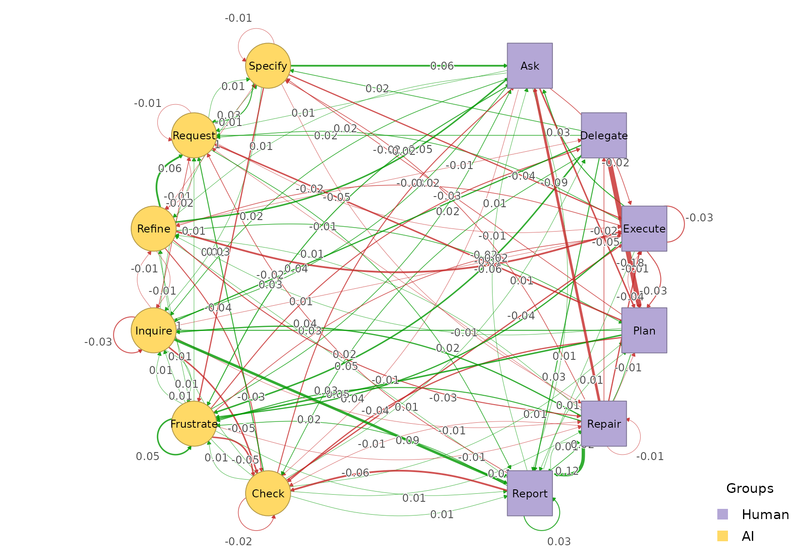
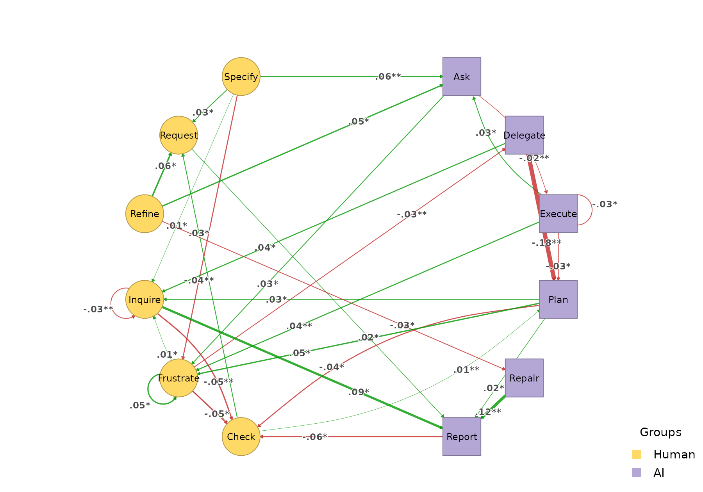
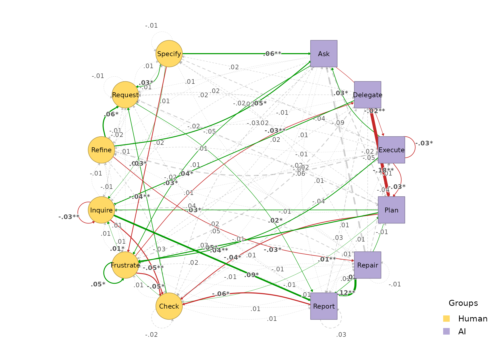

A common HTNA question is whether the same actor partition behaves
differently across cohorts – e.g. early-phase versus late-phase
sessions of an interaction corpus; control vs. experimental groups;
female vs. male, etc.. build_htna() supports this directly
by passing the session-level grouping column to the function. The result
is one network per cohort, each preserving the actor
partition. Every other function in htna recognises the
grouped result and iterates over cohorts.
An early / late example
We use the bundled human_ai corpus (Human + AI codes
from Nestimate::human_long / ai_long, with a
slightly simplified alphabet – see ?human_ai). Sessions are
split chronologically: ordered by their first session_date
(with session_id as a deterministic tiebreak), the first
half of the sessions form the Early cohort and the rest form
the Late cohort, reflected in the phase
column.
Building one network per cohort
build_htna() takes the long data frame, the actor-type
column, and a group argument naming the session-level
cohort column:
grp <- build_htna(
human_ai,
actor_type = "actor_type",
group = "phase"
)
length(grp)
#> [1] 2
names(grp)
#> [1] "Late" "Early"The result is a named list of HTNA networks. Indexing one element gives a regular HTNA network you can use exactly like any other:
grp$Early
#> Transition Network (relative probabilities) [directed]
#> Weights: [0.001, 0.689] | mean: 0.089
#>
#> Weight matrix:
#> Ask Check Delegate Execute Frustrate Inquire Plan Refine Repair
#> Ask 0.018 0.069 0.000 0.033 0.099 0.054 0.433 0.044 0.005
#> Check 0.128 0.059 0.013 0.430 0.052 0.001 0.003 0.039 0.028
#> Delegate 0.000 0.031 0.000 0.012 0.087 0.012 0.689 0.012 0.000
#> Execute 0.050 0.089 0.000 0.086 0.127 0.090 0.119 0.078 0.003
#> Frustrate 0.184 0.129 0.054 0.126 0.089 0.056 0.002 0.096 0.032
#> Inquire 0.239 0.094 0.027 0.289 0.036 0.051 0.010 0.024 0.046
#> Plan 0.000 0.165 0.000 0.018 0.193 0.068 0.004 0.079 0.006
#> Refine 0.118 0.059 0.009 0.236 0.005 0.017 0.005 0.000 0.038
#> Repair 0.282 0.014 0.035 0.408 0.028 0.028 0.021 0.021 0.007
#> Report 0.097 0.148 0.000 0.011 0.112 0.101 0.043 0.058 0.036
#> Request 0.147 0.057 0.019 0.295 0.015 0.009 0.007 0.013 0.007
#> Specify 0.242 0.018 0.040 0.291 0.114 0.006 0.014 0.001 0.016
#> Report Request Specify
#> Ask 0.023 0.166 0.054
#> Check 0.052 0.038 0.156
#> Delegate 0.006 0.124 0.025
#> Execute 0.007 0.283 0.067
#> Frustrate 0.014 0.131 0.087
#> Inquire 0.123 0.039 0.024
#> Plan 0.016 0.346 0.105
#> Refine 0.019 0.075 0.420
#> Repair 0.049 0.077 0.028
#> Report 0.058 0.267 0.069
#> Request 0.026 0.072 0.332
#> Specify 0.039 0.114 0.106
#>
#> Initial probabilities:
#> Specify 0.813 ████████████████████████████████████████
#> Request 0.159 ████████
#> Frustrate 0.023 █
#> Refine 0.005
#> Ask 0.000
#> Check 0.000
#> Delegate 0.000
#> Execute 0.000
#> Inquire 0.000
#> Plan 0.000
#> Repair 0.000
#> Report 0.000
grp$Late
#> Transition Network (relative probabilities) [directed]
#> Weights: [0.001, 0.508] | mean: 0.090
#>
#> Weight matrix:
#> Ask Check Delegate Execute Frustrate Inquire Plan Refine Repair
#> Ask 0.018 0.058 0.000 0.012 0.132 0.072 0.385 0.058 0.002
#> Check 0.101 0.037 0.019 0.385 0.065 0.009 0.017 0.045 0.041
#> Delegate 0.000 0.049 0.000 0.008 0.139 0.057 0.508 0.016 0.000
#> Execute 0.076 0.085 0.000 0.059 0.165 0.085 0.091 0.057 0.001
#> Frustrate 0.204 0.078 0.024 0.110 0.139 0.064 0.005 0.100 0.026
#> Inquire 0.263 0.046 0.027 0.281 0.041 0.016 0.009 0.009 0.039
#> Plan 0.000 0.124 0.000 0.013 0.241 0.101 0.003 0.094 0.004
#> Refine 0.171 0.030 0.003 0.171 0.011 0.011 0.022 0.000 0.011
#> Repair 0.189 0.009 0.018 0.369 0.063 0.072 0.009 0.027 0.000
#> Report 0.106 0.091 0.000 0.007 0.133 0.103 0.054 0.059 0.042
#> Request 0.149 0.054 0.018 0.288 0.017 0.010 0.009 0.005 0.007
#> Specify 0.300 0.015 0.040 0.253 0.076 0.016 0.016 0.004 0.009
#> Report Request Specify
#> Ask 0.032 0.180 0.050
#> Check 0.058 0.065 0.157
#> Delegate 0.033 0.139 0.049
#> Execute 0.013 0.305 0.063
#> Frustrate 0.029 0.138 0.083
#> Inquire 0.215 0.018 0.034
#> Plan 0.039 0.299 0.083
#> Refine 0.027 0.139 0.405
#> Repair 0.171 0.063 0.009
#> Report 0.091 0.251 0.064
#> Request 0.042 0.062 0.340
#> Specify 0.036 0.139 0.096
#>
#> Initial probabilities:
#> Specify 0.823 ████████████████████████████████████████
#> Request 0.153 ███████
#> Frustrate 0.023 █
#> Ask 0.000
#> Check 0.000
#> Delegate 0.000
#> Execute 0.000
#> Inquire 0.000
#> Plan 0.000
#> Refine 0.000
#> Repair 0.000
#> Report 0.000Because both cohorts were built from the same alphabet, both networks
have the same nodes – which is exactly what
plot_htna_diff() and permutation_htna()
need.
Plotting per cohort
plot_htna() iterates over cohorts and draws one network
per element. It does not manage the layout grid – wrap with
par(mfrow = ...) if you want a panel:

par(op)Per-actor sequences per cohort
sequence_plot_htna() works the same way:
sequence_plot_htna(grp, type = "index")

Centralities per cohort
centralities_htna(grp) returns one tidy data frame, with
a leading group column identifying the cohort:
ct <- centralities_htna(grp)
head(ct, 10)
#> group node actor OutStrength InStrength ClosenessIn ClosenessOut
#> 1 Late Ask AI 0.9818031 1.5589461 0.012787860 0.006478909
#> 2 Late Check Human 0.9626168 0.6386122 0.007197319 0.006605395
#> 3 Late Delegate AI 1.0000000 0.1490735 0.002917657 0.007882479
#> 4 Late Execute AI 0.9411332 1.8979808 0.015804367 0.006276049
#> 5 Late Frustrate Human 0.8607443 1.0820451 0.011215144 0.005880667
#> 6 Late Inquire Human 0.9839817 0.6005806 0.006753107 0.007325994
#> 7 Late Plan AI 0.9972028 1.1252050 0.011785910 0.007330088
#> 8 Late Refine Human 1.0000000 0.4740402 0.005877737 0.006024616
#> 9 Late Repair AI 1.0000000 0.1826564 0.002721100 0.007924645
#> 10 Late Report AI 0.9090909 0.6955351 0.005709637 0.007097699
#> Closeness Betweenness BetweennessRSP Diffusion Clustering
#> 1 0.01632119 17 98 8.856237 0.1604590
#> 2 0.01234619 8 36 8.586347 0.2104778
#> 3 0.01214724 0 2 9.035552 0.1823412
#> 4 0.01731834 24 108 8.400011 0.1380461
#> 5 0.01243172 4 65 7.830994 0.1951504
#> 6 0.01403984 8 31 8.842141 0.1621084
#> 7 0.01596275 25 59 8.812412 0.1629786
#> 8 0.01188981 0 22 8.889109 0.2437973
#> 9 0.01368159 0 1 8.960075 0.2019068
#> 10 0.01241482 0 24 8.166331 0.1499067plot_centralities() faces a grid: rows are cohorts,
columns are measures, so cohort-level differences are easy to read at a
glance:
plot_centralities(grp, by = "group")
Bootstrap per cohort
bootstrap_htna(grp) runs the bootstrap on each cohort
and returns a group of bootstrap results.
plot_htna_bootstrap() iterates again:
boots <- bootstrap_htna(grp, iter = 200)
op <- par(mfrow = c(1, 2))
plot_htna_bootstrap(boots, display = "significant")
par(op)Centrality stability per cohort
centrality_stability_htna(grp) runs the case-dropping
centrality stability check on each cohort and returns a named list of
htna_stability objects. Each cohort’s cs
reports the largest session-drop proportion at which
InStrength, OutStrength, and
Betweenness still correlate with the originals at the
default 0.7 / 0.95 threshold:
stab <- centrality_stability_htna(grp, iter = 100, seed = 1)
sapply(stab, function(s) s$cs)
#> Late Early
#> InStrength 0.9 0.9
#> OutStrength 0.9 0.8
#> Betweenness 0.8 0.8The columns are cohorts, the rows are centrality measures. By the Epskamp et al. (2018) convention, CS > 0.25 is acceptable and CS > 0.5 is preferred for inferential use; the maximum reportable value is the upper bound of the drop-proportion grid.
Comparing the two cohorts
Both networks share an alphabet, so you can compute the elementwise
difference directly with plot_htna_diff(). Positive (Late
> Early) is green, negative (Early > Late) is red:
plot_htna_diff(grp$Late, grp$Early)
permutation_htna() quantifies which differences are
statistically significant:
perm <- permutation_htna(grp$Late, grp$Early, iter = 500)
plot_htna_diff(perm)
plot_htna_diff(perm, show_nonsig = TRUE)
Cohort-level pattern comparison
permutation_htna() tests edge-level differences between
cohorts. For pattern-level differences — recurring k-grams that
characterise one cohort over the other — see the sequence comparison vignette. The
same grouped network feeds directly into
sequence_compare_htna(), which also supports a
level = "type" option that runs the comparison on
meta-paths (e.g. Human -> AI -> Human) rather than
concrete state codes.